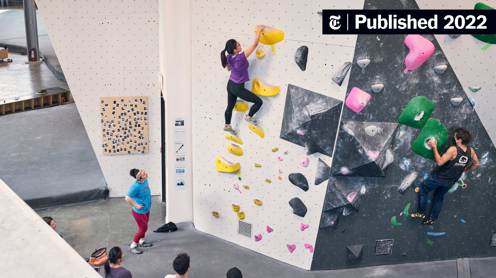

Climbing
In January 2026, I went indoor bouldering for the first time with some of my co-workers. Previously I have only climbed using auto-belay at the Auburn Recreation Center, so this was my first experience without a harness.
I was immediately hooked and went one more time before getting a gym membership, along with the necessary gear like climbing shoes and a chalk bag. So far bouldering has been very fun, and it has been rewarding to see myself improve after every visit.
Not only is it good exercise, but it has also helped me decompress after a long work day.
